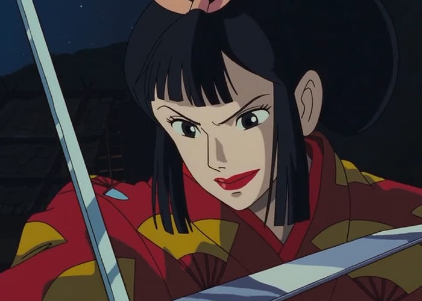
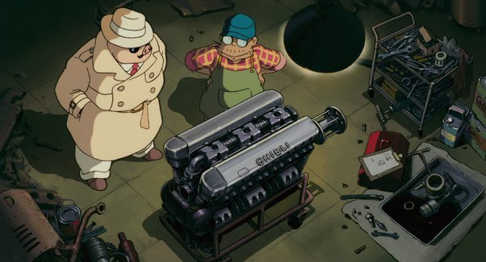
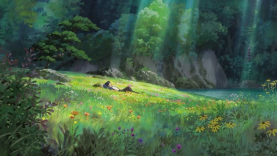

Introduction
Princess Mononoke is an animated film by Studio Ghibli and originating from Japan. It explores essential themes such as the significance of nature, environmental preservation, and the impact of urbanization on wildlife. It draws inspiration from Japanese Culture, seen in various Japanese spirits making an appearance throughout the film.
Simultaneously, Princess Mononoke exists as a text, technology and physical and intangible commodity. It is seen as a text through its presentation of binary opposition, blended sets of codes and denotation. As technology, it demonstrates ideas of technological determinism and active audience theory. As a commodity, Studio Ghibli (the animation studio), sells itself as a physical commodity in two separate forms. One is selling copies of the movie, both tangible and intangible, and the other is a Studio Ghibli Theme Park for fans of the studio.

Binary Opposition (Lady Eboshi):
Lady Eboshi (seen on left) is the leader of Irontown and the main antagonist in Princess Mononoke. Despite her black-and-white role of “the antagonist”, as a human, she is a hero because she views people equally. For example, she freed lepers and women that previously worked in brothels and gave them a place to work and live. As a human, she represents the goodness of the human psyche. However, as the villain of the story, she treats the environment poorly. Her plan to industrialize and expand the town has adverse effects on nature. Overall, Lady Eboshi represents the good and bad of humans, hence how she demonstrates binary thinking.
Binary Opposition (San):
San is a human raised by wolves. Biologically, she is a human but she lives and communicates as a wolf would. The entire film portrays the struggle between nature and humans, while San exists in the middle. San represents nature, along with the animal gods and spirits. Compared to human beings like Lady Eboshi and Irontown, both sides are representative of the destruction that both parties inflict on each other.

Media as a Technology:
Technology (definition):
Technology is defined as “the application of scientific knowledge for practical purposes” (Britannica)
Technological Determinism:
In this context, Princess Mononoke is an example of technology because it is a digitally produced animated film. In a literal sense, Princess Mononoke employs technology simply because it is a film. Visuals were both hand drawn and generated with computer animation. Aside from that, the film uses character modeling, scene graphics and action design to create a beautiful film that is up to par with today’s standards, despite its age.
Apart from its literal sense, Princess Mononoke exists as a technology because of technological determinism. Technological determinism is the “idea that technology has an important impact on our lives” (Chandler & Monday 2020). This is a stance that implies that the technology we consume has an impact on society. Undeniably, Princess Mononoke acts as a critique on how humans are torn between development versus preservation, a common theme in the film. At this point, do we continue to develop our technology at the expense of its impact on us or do we preserve what we have, and be complacent with our current progress? This can be related back to Lady Eboshi and San.
Production of the Film
Determinism (Production of the Film):
The film's character modeling, scene graphics, and action design to the present are very natural and beautiful, special effects are also very colorful, from the painting for the audience to create an "immersive" visual experience, which is one of the key reasons to harvest many fans. Aurally, there is no shortage of emotionally charged sequences in films, and the production of sound is crucial when the picture needs to be rendered the most. Sound can shape the image and portray the character's personality, the character's voice can make the character more distinct, and the background music can better create the picture and set the atmosphere in the climax part or lyrical part, enhancing the artistry and infectiousness of the film picture, loved by the audience. So the film can also be called a comprehensive technology, the film as technology also decided that Princess Mononoke will have a large market.
